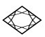
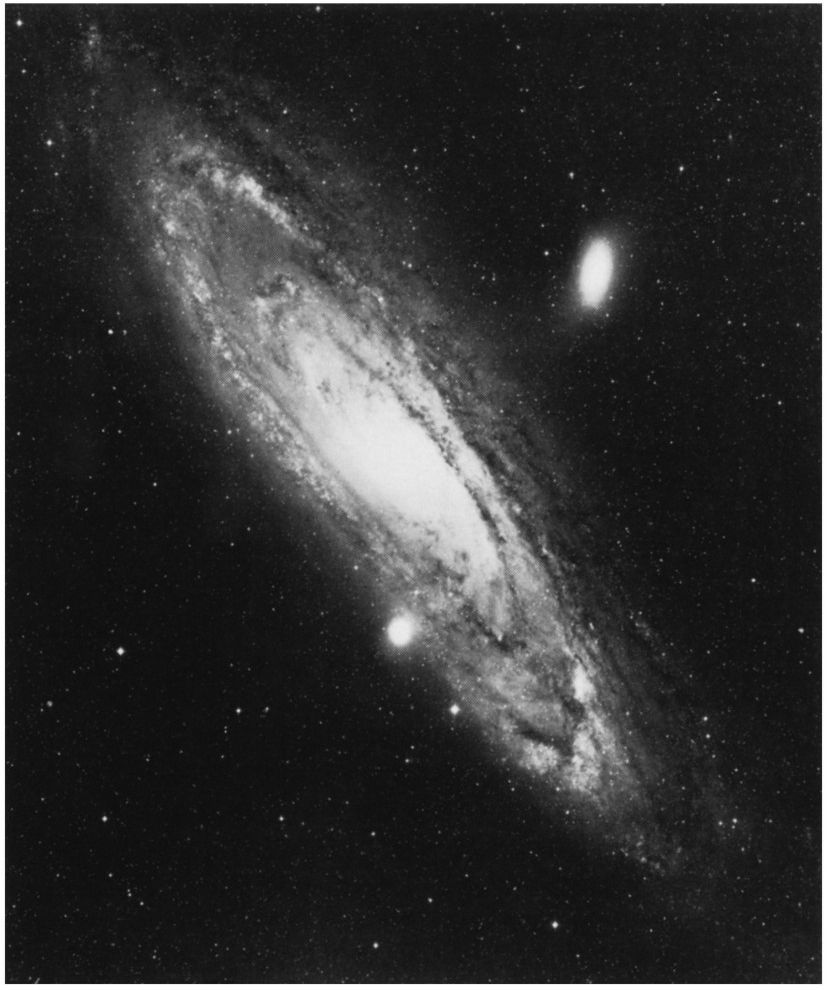
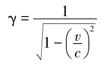
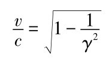
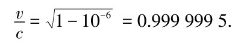
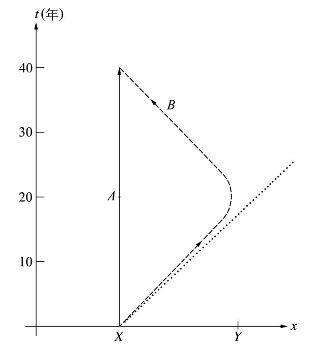

第十一章2点钟左右我们返回爱因斯坦的寓所。午餐时我有意避免谈及相对论，我们改谈探测粒子的各种方法。我们在午餐期间和随后沿着阿勒河散步时的讨论涉及盖革（Geiger）计数器、云室、气泡室、火花室、丝室，以及其他诸如此类有助于我们发现基本粒子经过时留下径迹的装置。所有这些基本粒子物理学的细节对于非物理学家而言并没多少趣味。
我们一到达爱因斯坦的寓所，牛顿就把讨论引回到时间延缓上来。
牛顿： 我们知道时间延缓影响所有运动的系统，比如飞机或汽车，因此我们应能通过在其中安置高精度的时钟来探测时间延缓。这主意如何？
爱因斯坦： 好的，让我们做个思想实验来澄清问题。假设我们携带一个高精度的时钟并驾驶汽车以120千米每小时左右的恒定速度往返于伯尔尼和苏黎世，那大约要花上2小时。
爱因斯坦拿起铅笔做了简单计算。他很快就在纸上得到了结果。
爱因斯坦： 在这种情况下v/c 比值极小，为10-7 的量级。这意味着γ因子与1的差别仅为6×10-15 。我们将行驶2个小时，或者说7200秒；时间延缓效应最终会使我们的时间伸长6×10-15 倍，将此倍数乘以7200秒，其结果不足10-10 秒。当我们返回伯尔尼并把我们的时钟与当地始终静止不动的时钟做比较时，我们应该观察到大约6×10-11 秒的时间差。
哈勒尔： 我恐怕不得不让你们失望了。这么微小的时间差是无法用我们今天所拥有的时钟来测量的。正如我先前说过的那样，最好的原子钟达到了10-14 的精度，而这比我们刚刚讨论过的情形里所要求的精度 [1] 要低一点。
要想使时间延缓效应确实可测，我们就不得不把汽车的速度提高到10倍，以1200千米每小时的速度飞奔苏黎世。没有任何汽车会跑得这么快，而且我们那样做会超出120千米每小时的瑞士限速，超出了1000千米每小时还多。
爱因斯坦： 飞机怎么样？据我所知，飞机的速度可以轻易地超过每小时1000千米。
哈勒尔： 的确，高速喷气式飞机已被用于这类实验。假设我们乘坐喷气式飞机以1000千米每小时的速度飞行，环绕地球一周的总飞行时间将为36小时。在这种情况下，γ因子相对于1偏离了0.5×10-12 。整个飞行期间的时间延缓效应是这个数字乘以36×3600秒，导致约10-7 秒的时间差，可以轻而易举地测出来。
20世纪70年代初期，华盛顿美国海军天文台的科学家们进行了一次简单的实验，让一个物理学家乘坐班机环绕地球一周。旅行中他在座位旁边安放了几个原子钟。当他返回华盛顿之后，人们把这些钟与一直留在华盛顿的相似的钟作了比较。结果确实如此，旅行的钟走得稍微落后于静止的钟，完全符合爱因斯坦的理论。顺便说一句，和CERN的μ子实验相比，这是一个花费不多的实验。仅仅花钱买了两张飞机票，物理学家一张，他的钟一张。
牛顿一直十分专心地听着。
牛顿： 行了，爱因斯坦。我认为我们没有必要进一步证明时间延缓了。我现在完全相信不依赖于观察者的绝对时间是不存在的。然而，时间是一个多么不可思议的现象啊！时钟在运动的时候就走得比较缓慢。
牛顿摇着头，起身走向房间的一角，那里立着一台老掉牙的落地式大摆钟。很明显，钟的指针已有很长时间不走动了。他注视了一会儿钟盘，然后拨动钟锤，于是在安静的房间里响起了清晰的滴答声。
牛顿： 我们仍然不知道时间究竟意味着什么。假设我把这台钟以及所有其他时钟，包括所有也可以充当时钟的原子等等，统统移出房间，那么我将面对一间空房：我究竟还有没有时间呢？还会存在时光流逝吗？如果存在的话，到底是什么在流逝呢？时间会脱离物质而存在吗？我们何时才能最终得到关于这一切的答案呢？
牛顿踱步来到窗前。他向外眺望，目光越过克拉姆小巷，陷入沉思。我建议短暂休息一下。该轮到爱因斯坦准备茶点了，牛顿和我就坐在那里，顺着我们各自的思路继续讨论。
牛顿： 昨天夜里在上床睡觉之前那一会儿，我散步到了大学。当我仰望苍穹之际，我意识到我们可以利用时间延缓效应，借助于高速运行的火箭去探索我们的银河系，甚至抑或其他星系。
几天前在剑桥，我阅悉光从地球传到位于我们的银河中央的恒星需要大约3万年。我们一直十分天真地确信，很少活过100岁的人类绝不可能承担那种旅行。但情况并非如此，如同我们从μ子那里得到的启示。时间延缓帮得上忙，说得更确切点，倘若我们能够造出宇宙飞船，其速度如果不严格等于光速的话，也可以接近光速，那么时间延缓就会帮上忙了。那将有怎样惊人的潜在价值展现出来啊！被禁锢在地球上的人类就能够探索遥远的太空。你以为如何？这听起来现实吗？

图11.1 离我们的银河系最近的仙女星系，与地球的距离大约为250万光年。它的尺度大体是银河系的2倍，包含了大约2000亿颗恒星。有充分的理由相信存在着数以千计的类似于我们的太阳系的星系。如果一艘宇宙飞船能够以接近光速的速度飞行，它造访仙女座在原则上应该是切实可行的。然而，当返回地球的时候，宇航员们会发现在他们居住过的行星上时间已经过去了大约500万年。
哈勒尔： 艾萨克爵士，原则上你是对的。但可惜仅在原则上是对的。你可得记住，我们在μ子的情形中之所以得到显著的时间延缓效应，即γ=30的时间伸展因子，只是由于这些粒子以大于99％的光速的速度穿行于空间。以今天的技术，不可能把一个宏观物体，无论是一颗子弹还是一枚火箭，加速到接近光速的速度。不过让我们暂时撇开这个技术难题。
一个人若要用30年的时间从地球飞到银河系的中心，相应的γ因子就得取30 000÷30=1000。若没有γ因子，即不存在时间延缓的话，整个计划是毫无指望的。在30年的航行期间，宇航员的速度接近于光速，他飞行的距离略小于光同期所传播的距离。他走得仅比从地球到我们的太阳周围的恒星的距离稍远一点。确定γ=1000所对应的速度是件容易的事。
这时爱因斯坦端着茶水走进了房间。他显然已无意中听到了我们的对话。
爱因斯坦： 艾萨克爵士，你真的没变，仍旧关注着天宇。就我而言，我承认我生活在我们这颗古老的小行星上觉得非常惬意。作为我们的太阳的一个伙伴，地球在太空中穿行得也很快。你能想象出有什么东西好于地球飞船，即一个拥有湖泊、绿色森林以及像伯尔尼这样的城市的运载工具呢？好吧，牛顿，让我们看一看，要在30年内到达银河系中心，你得以怎样接近光速的速度飞行。
在这之前，我已经做了一点计算。γ因子由公式

给出，所以我们可以用

来计算我们的飞船的速度与光速c的比值。当γ=1000时，我们得到

哈勒尔： 艾萨克爵士，你看到了吧，太空旅行者需要以几乎等于光速的速度飞行。我们马上就会发现把一艘宇宙飞船加速到那个量级需要极大的能量。以今天的技术那是做不到的，而且我认为在不远的将来那也不切实可行。
牛顿： 好的，哈勒尔。我意识到了去银河系中心旅行或者仅仅飞抵邻近的恒星目前仍属于幻想。然而，我们即使不能亲身去旅行，也可以在我们的思想里旅行。正如爱因斯坦喜欢说的那样：我们可以做个思想实验。
昨天夜里我在想，乘坐一艘快速宇宙飞船飞抵某个星球然后再返回地球，发现时间在地球上比在宇宙飞船中流逝得快，这应该是做得到的。
爱因斯坦： 你的想法毫无问题。让我们假设一个太空旅行者乘坐飞船以260 000千米每秒的速度离开地球。这一速度差不多对应于γ=2。我们进一步假设这位太空旅行者把他的双生兄弟留在了地球上。他离开时年纪为30岁。远离地球旅行了10年之后，他操纵制动器使飞船转弯，朝向地球以最短的轨道飞回。再经过10年他回到了地球上，年龄已到了50岁。抵达地球之际他发现他的双生兄弟已经老了40岁，刚刚庆祝完自己的70岁生日呢。
牛顿： 爱因斯坦，你刚才描述了相对论的一个迷人的应用实例。我得承认我还没有考虑过生命以及人衰老的过程与时间延缓的关系。但足以肯定的是，如果时钟在运动时走得慢些，即运动使时间延展，那么诸如自然衰老等人的生命过程也就会延缓。
哈勒尔： 谨慎点，艾萨克爵士。像你刚才所说的那样，人们也许会考虑利用时间延缓作为青春活力的源泉来玩衰老过程的魔术。那自然是做不到的。时间延缓毕竟只是被束缚在地球上的观察者看到的表面效应。在宇宙飞船上，说得更确切一点，在随宇宙飞船一同运动的参考系里，包括宇航员体内的化学和生物过程等所有过程都按照典型的情形发生着，就像在地球上所发生的那样。仅仅对于地球上的观察者而言，如果他有可能在很大且不断变化的空间跨度上注视这些过程，它们才似乎放缓了。打个比方，太空旅行者的心脏每分钟跳60次。假如他那在地球上的双生兄弟借助于适当的无线电信号做记录，他会得到每分钟30次的心跳读数。宇航员的脑电流，或者说他的思想过程，将同样地显得缓慢下来。
因此，时间延缓并不能帮助我们获得额外有益的可以用来生活的时间。当太空旅行者最终返回地球并发现自己比双生兄弟年轻20岁时，他注意到从离开时算起他生活的时间和内容，包括思想活动和吃喝拉撒睡，样样都只有他兄弟的一半。
爱因斯坦： 恐怕他所经历的比这更少。被关在空间狭窄的飞船里达20年之久一定是可怕的。如果让我选择的话，我宁愿坚持在地球上过惬意的生活。我若有个双生兄弟，我就送他 上太空。
牛顿： 所以我们并不能借助于爱因斯坦的时间延缓来创造青春之源泉。但我想到了另一个问题。让我们再考虑一下那两个双生兄弟，其中一个呆在地球上，另一个以恒定的速度远离地球，然后折返，并以同样的速度飞回地球。这对双生兄弟都处于惯性系。
哈勒尔，正如你刚刚提到的那样，地球上的双生子如果能够看见他那在太空中的兄弟的生活过程，那么他观察后者的时间延缓就不会有任何问题。然而，两个双生兄弟之间并不存在本质的区别：如果宇航员回顾他那在地球上的兄弟，他会注意到相同的时间延缓；从他的惯性系来看，他的兄弟和地球都在太空穿行。这使得他预料，当他回到地球时，是他本人而非他那留在地球上的双生兄弟变老了。我必须承认，对我而言，整个事情看起来疑云重重——地地道道的双生子佯谬（twin paradox）！
爱因斯坦 （呷着他的茶）：我一直在等待这样的异议。你有一点是对的：如果一对双生兄弟在各自的惯性系相对匀速运动，那么没有任何理由偏爱其中的一个。当双生子们考虑处于运动中的太空旅行的兄弟时，他们都观察到时间延缓。然而，两者的情形并非如此平等。地球上的双生子与太空中的双生子之间有着一个重要差异：太空旅行者远离地球，在一个给定的时间之后返回，这意味着他不可能始终沿着一条直线做匀速运动。他在某一地点不得不减速转弯，然后朝相反的方向使飞船加速。他转弯时并不处于惯性系。这意味着我们对时间延缓的观察，特别是有关γ因子的计算，并不适用于太空旅行者的整个运动过程；但却适用于地球上的双生兄弟的运动。
这绝非对等的情形。太空旅行者处于不利的境地；与他那身处地球的兄弟不同，他得经历减速、转弯与再加速的全过程。这就是地球上的双生子最终落得个先老20年这种下场的缘由。
牛顿： 我承认两个双生子之间存在差异，如同你刚才说的那样。但我们还是用这对双生兄弟各自适当的世界线来表示他们在时空中的轨迹吧，以澄清事实。
他拿起铅笔和纸勾勒出带有双生子的世界线的时空草图（见图11.2）。

图11.2 双生子佯谬的时空示意图：始终呆在X 点的双生子的世界线平行于时间轴延伸；另一个双生子从X 点旅行至Y 点，转弯，返回X 点。点线表示当第二个双生子出发时从X 点射出的光信号的径迹。他的旅行几乎平行于光信号的径迹延伸：由于他差不多以光速旅行（在目前的情况下，速度为260 000千米每秒），他的行进路线大致平行于光锥。
牛顿： 看看这些世界线，两个双生兄弟之间的差别就清楚了。处于静止状态的双生子的世界线是条直线，他那作为太空旅行者的双生兄弟的世界线显然不是直线。后者与各种加速或减速过程相关，变成一条相当复杂的曲线，在他的旅途结束处会与他那在地球上的兄弟的世界线相交。
爱因斯坦： 当你把旅行者的转弯画成渐进过程而非突然反向时，你是对的。我们也应该记着旅行者并不是以全速出发的，而是得做很多加速的准备才能达到全速。但我们暂时先忽略这些细节。
牛顿： 我认为那个旅行的双生子在他大部分的行程里是否以恒定的速度穿越时空并不重要；时间延缓总会发生，不论是在加速或是在减速的时候。只有把时间延缓作为技术手段用于空间旅行时，再考虑我们所论及的变速类型才重要：像宇宙飞船那样复杂的装置当然不可能受得了无限加速。
我建议我们还是举例说明。让我们假设旅行的双生子所乘的飞船以恒定的加速度离开地球，并取这一加速度等于地球上自由下落的石块的加速度。在第1秒钟，飞船的速度从零变到9.8米每秒；在第2秒的间隔之内，它增大一倍；如此类推。保持这样的加速度，你最终得到足够大的速度，使时间延缓变得显著起来。
哈勒尔： 前一段时间，我给我的大学生们出了个类似的问题。你是对的，时间延缓效应将很快变得明显起来。我们假设旅行的双生子出发时还年轻，他飞行的方向是仙女星系，距地球大约200万光年。在半路上，即在飞船上已经过去了15年的时候，他停止加速飞船。
现在他开始减速，大小与先前的加速度相同。这样他将再过15年到达仙女座所在的区域，速度变为零。
到达目的地以后，他决定使飞船加速，朝向地球返回。整整60年之后，他终于回来了。当他着陆时，他注意到没有人还记得他的双生兄弟。原来在地球上已经过去了400万年。
爱因斯坦： 顺便提一句，在我们所讨论的情形里，宇宙飞船的均匀加速和减速对太空旅行者来说是有用的，因为他将不必考虑失重问题。由于太空旅行者的加速度与地球上自由落体的加速度相同，他感觉自己就像在地球上一样。他的加速度在大多数方面，即便不是在所有方面，会补偿地球上的引力场。
牛顿： 不管怎样，即使加速度像我们在地球上所体验的那么小，但只要加速足够长的时间，时间延缓就会重要起来，这一点哈勒尔已经讲清楚了。我猜想当今的技术不允许建造一枚能产生如此加速度并持续多年的火箭。你们以为如何？
哈勒尔： 问题恰恰在这儿。我们也不知道将来是否办得到。肯定要到许多个世纪之后才会有人能够利用时间延缓去证明双生子不同的变老过程。
爱因斯坦 （清了清嗓子）：先生们，我的表告诉我时间已过下午6点了。我们三个人相互处于静止状态，因此我假设时间延缓对我们来说是可以忽略的，而且你们的表会显示同样的时间。我们结束今天的讨论会并去享用晚餐，好不好？
我们一致接受了他的提议。不一会儿我们就走过了仍旧熙熙攘攘的伯尔尼老城街道，去往阿尔贝格饭馆。我们经常在那个地方吃晚饭。
注解：
[1] 即分辨出γ因子相对于1的细微偏离所需要的时钟精度，也就是6×10-15 。——译者